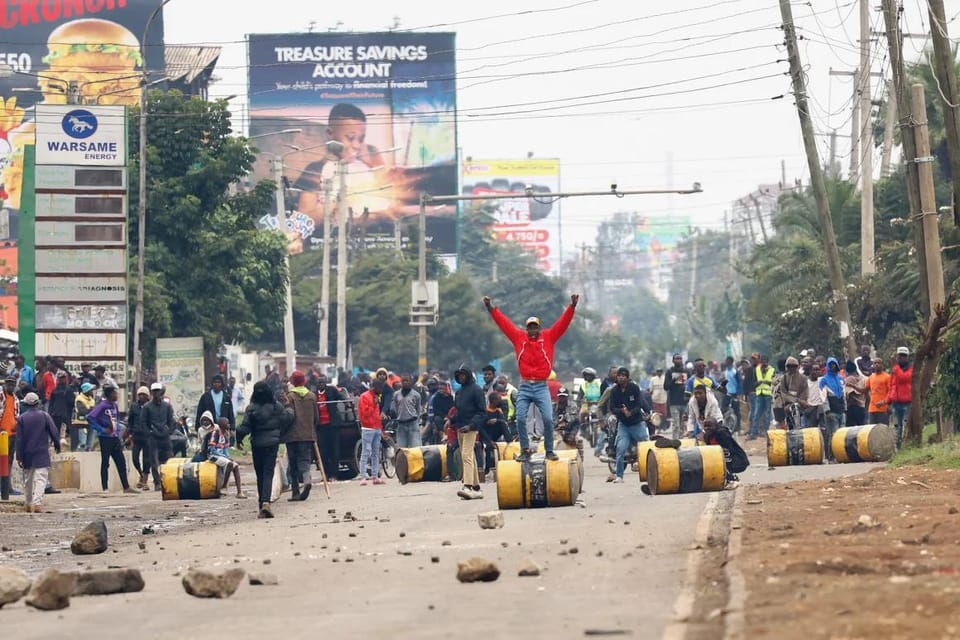

世界苦茶07月09日新闻 | 42条 | 中国6月PPI录得两年最大跌幅

中国6月PPI录得两年最大跌幅 | AI冒充的卢比奥联系外国官员 | 日本生成式AI使用远低于中国 | 最高院支持特朗普裁员计划
今日三条新闻分析
苦茶数据
美元兑人民币：7.18（昨日7.17，前日7.16）
美元兑日元：146.99（昨日146.10，前日144.32）
上证指数：3502（昨日3493，前日3463）
标普500指数：6225（昨日6229，前日6279）
比特币：108794（昨日108024，前日109046）
布伦特原油：69.91（昨日69.19，前日67.72）
中国新闻
• 中男子涉疫苗间谍被捕 ：一名33岁中国男子涉嫌对包括冠病疫苗研发在内的项目，从事工业间谍活动，而被美国通缉，他上周在意大利逮捕。路透社星期一引述意大利法律和司法部门消息人士说，该男子名叫徐泽伟，来自中国上海。他上星期抵达米兰马尔彭萨机场后，因美国联邦调查局发出逮捕令而落网。美国当局指控徐泽伟是黑客团队成员，曾在2020年试图窃取德克萨斯大学正在研发的冠病疫苗。
• 中国游客意大利遭洗劫 ：中国一个旅游团在意大利搭乘的旅游大巴被洗劫，中国总领事馆提醒游客上下车时确认随身带好证件及个人物品，不要将相关物品留置车中。中国红星新闻报道，旅行团一名金姓男游客称，洗劫事件发生在上星期四，当时一车人下车吃饭，用了20分钟左右的时间，回来发现大巴车的门被撬开，车上所有的行李、背包被洗劫一空。据金姓男子叙述，他报了个欧洲四国游的团，即法国、瑞士、德国、意大利，意大利是最后一站。事发当天，旅行团先去了比萨斜塔，玩完之后到了午饭时间，吃饭的地方特别偏僻。
• 中方批美涉藏言论干涉 ：针对美国国务卿鲁比奥周末发表声明，祝贺西藏精神领袖达赖喇嘛90岁寿辰，中国外交部发言人毛宁星期二敦促美国充分认清涉藏问题的重要性和敏感性，认清“达赖集团反华分裂本质”，恪守在涉藏问题上所做承诺，停止插手涉藏问题，停止以任何方式向“藏独”势力发出错误信号。十四世达赖喇嘛星期天年满90岁，美国国务卿鲁比奥星期六发声明，向达赖喇嘛致以最美好的祝福，形容这名诺贝尔和平奖得主是“团结、和平与慈悲理念的化身”。鲁比奥说，美国依然坚定致力于促进对藏人人权和基本自由的尊重，支持保护藏人独特的语言、文化和宗教传统的努力，包括藏人不受干涉地自由选择并敬拜宗教领袖的能力，与中国政府的表态形成对比。
• 四川山体垮塌致5死 ：四川省雅安市天全县发布通告称，截至星期二上午，搜救工作全面结束，两名失联者已被找到，均已遇难。雅安山体垮塌共造成五人遇难，两人轻伤。雅安市天全县城厢镇国道318线上星期六下午1时25分许，突发山体垮塌，截至星期一下午2时，两人轻伤，三人经抢救无效死亡，另有两人失联。截至星期二，搜救工作全面结束，两名失联者已被找到，均已遇难。
• 美恢复对藏援助680万美元 ：美国国务院星期二向路透社透露，美国已恢复向南亚藏人提供的680万美元援助。上周，印度西藏流亡政府领导人边巴次仁在西藏精神领袖十四世达赖喇嘛90岁生日庆典期间说，美国削减对外援助，藏人成了连带的受害者，不过目前援助资金已恢复。根据“美国优先”政策，特朗普政府削减了大量对外援助，包括对流亡藏人的援助。政策打击了一系列项目，包括旨在保障粮食安全和防止世界最贫困地区爱之病毒传播的项目。
• 习近平山西考察强调稳定 ：中共总书记习近平星期二在煤矿大省山西考察时，要求着力稳就业、稳企业、稳市场、稳预期，兜牢困难群众基本生活。他并要求强化社会治安整体防控，常态化开展扫黑除恶，打击各类违法犯罪活动，确保社会大局稳定。据新华社报道，习近平星期一至星期二在中共山西省委书记唐登杰、省长卢东亮陪同下，先后到阳泉、太原考察调研。中国副总理何立峰陪同考察。习近平星期二上午听取中共山西省委和省政府工作汇报，对山西各方面取得的成绩给予肯定，对下一步工作提出要求。 （翻评：这个信号很直接，稳就业、稳企业、稳市场、稳预期。）
• 王毅将出席亚细安外长会 ：中国外交部发言人星期二宣布，外长王毅将出席星期四至星期五在马来西亚吉隆坡举行的中国—亚细安外长会、亚细安与中日韩外长会、东亚峰会外长会和亚细安地区论坛外长会，届时可能与同样访马国的美国国务卿鲁比奥首次会见。美国国务卿鲁比奥今年1月就职后，仅在1月24日与王毅通过一次电话。两人当时在通话中针对台湾问题展开交锋，鲁比奥表示“严重关切”北京的对台胁迫行为；王毅则说，希望鲁比奥“好自为之”。另据法新社报道，鲁比奥将于星期二启程到马来西亚两天，参与亚细安外长会议，届时还将与俄罗斯外长拉夫罗夫、王毅会面。
• 西藏泥石流多人失联 ：中国西藏吉隆口岸发生泥石流，已导致中国一侧11人失联，尼泊尔一侧已知有六名中方人员失联。据新华社报道，记者从西藏日喀则市吉隆县获悉，星期二清晨5时许，中国和尼泊尔边境的吉隆口岸一带发生泥石流灾害。经初步统计，泥石流已致中国一侧11人失联，尼泊尔一侧已知有六名中方施工人员失联。
• 菲召见中方大使表关切 ：菲律宾政府召见中国驻菲律宾大使黄溪连，为北京的罕见之举表达关切。中国外交部上周宣布，以在涉华问题表现恶劣为由、制裁菲律宾前参议员托伦蒂诺。综合菲律宾通讯社和《马尼拉公报》报道，菲律宾总统府新闻发言人克莱尔·卡斯特罗在星期二的例行记者会上，发布外交部副部长特蕾莎·拉扎罗签署的声明。菲外交部在声明中说，虽然中国有实施制裁的法律权利，但向执行公务的民选官员施加惩罚性措施，与两个平等国家基于相互尊重和对话建立关系的惯例不符。
• 男子传播不雅视频被刑拘 ：中国江苏省南京市公安局通报，一名外地男子涉传播淫秽物品被刑拘。此前网传南京60岁大叔男扮女装，及与千余人发生亲密行为信息不实。此新闻事件星期二冲上微博热搜第一。南京市公安局江宁分局星期二在市公安局官方微信公众号“南京警方”发布警情通报，江宁警方近日接到群众报警称其隐私视频被他人传播至互联网。江宁警方立即开展调查，并于上星期六将焦姓嫌犯抓获归案。经查，38岁焦姓男子是外省来宁人员，假扮女性，相约与多名男性发生性行为，并偷拍视频在互联网传播。网传南京60岁大叔男扮女装，及与千余人发生亲密行为信息不实。
• 澳总理将访中强化合作 ：澳大利亚总理阿尔巴尼斯星期二证实，他将在来临的周末访问中国，首站将到访四川省会成都，时值北京正寻求在人工智能、绿色能源和数字经济领域加强合作。路透社引述阿尔巴尼斯在澳洲塔斯马尼亚首府霍巴特告诉记者：“我期待访问上海、北京和成都，周六我将访问成都。”但他并未透露更多访华行程细节。中国外交部发言人同日下午宣布，应国务院总理李强邀请，阿尔巴尼斯将于7月12日至18日对中国进行正式访问。
• 李强宣布数字南方计划 ：中国总理李强本周出席金砖国家领导人系列会议期间宣布，北京将在全球发展倡议框架下打造“数字南方”品牌，未来五年为南方国家举办200期数字经济、人工智能培训项目。据新华社报道，李强当地时间7月6日和7日在巴西里约热内卢出席金砖国家领导人第十七次会晤第二及第三阶段会议，围绕加强多边主义、人工智能、环境和气候变化、全球卫生等议题发表讲话。李强表示，当前国际经贸秩序、多边贸易体制受到严重冲击，世界经济复苏艰难。他认为，“大金砖合作”要秉持成立初衷，契合时代之需，维护和践行多边主义，推动建设公平开放的国际经贸秩序，凝聚全球南方力量，为世界稳定发展作出更大贡献。
亚太印太新闻
• 缅甸民众自建通信网 ：缅甸内战持续了四年多，通信网络不是被摧毁，就是被军政府严加管制。缅甸人采用各种方法，从老式的架高天线，到先进的星链互联网，只为与世界保持联系。在西部若开邦邦纳均镇，一些人爬上山顶寻找手机信号，让绍登芒意识到可以利用10米高的竹竿撑起天线收发无线电信号。他六个月前开始经营三台公共电话，让镇民可以与远方的亲人保持联系。他如今每天可以赚取约23美元的收入。他说：“他们不想与身在其他地方的孩子断了联系。他们不在乎要付出多少代价。”
• 特朗普称韩国应自行承担国防费用 ：特朗普表示，韩国需要自行支付军事保护费用，暗示这一美国盟友需要为获得美国的安全保障支付更多费用。特朗普表示，他在他的第一任期内曾让韩国同意为驻韩美军支付更多费用，但前总统拜登“取消”了这项协议。特朗普表示，美军的存在将给驻扎国带来“巨大”的经济利益。
科技新闻
• 苹果AI主管跳槽Meta ：苹果公司负责人工智能模型的最高主管将跳槽至Meta，加入后者新成立的“超级智能”团队。这对苹果本已步履维艰的AI战略，又是一大打击。离职者是苹果基础模型团队工程师兼主管彭若鸣。他曾任职于谷歌母公司Alphabet，并于2021年加入苹果，负责领导约100人的团队。据彭博社引述知情人士报道，Meta为挖角彭若鸣，开出每年数千万美元的丰厚薪酬，远超苹果为类似职位提供的薪资。
• 苹果COO退休引人事变动 ：苹果公司首席运营官杰夫·威廉姆斯即将退休，不再担任该公司长期的二把手，这标志着这家iPhone制造商迎来重大的人事调整。苹果周二在一份声明中表示，威廉姆斯将卸任COO一职，并在今年晚些时候从公司退休。他将在离职前继续负责公司的设计团队，管理健康项目。苹果表示，萨比赫·汗将接替威廉姆斯担任COO，苹果的设计团队将改为直接向CEO蒂姆·库克汇报。
• 字节否认出售TikTok美业务 ：中国科技巨企字节跳动否认，将TikTok在美国的业务卖给包括美国科企甲骨文在内等潜在买家。据第一财经报道，有消息称字节跳动已同意将TikTok美国业务出售给由甲骨文牵头的美国财团，自身保留少数股权。字节跳动星期二受询时表示，该信息不实。美国总统特朗普上星期五对媒体说，将在本周就潜在的TikTok交易，与中国国家主席习近平，或是习近平的代表展开谈判，并称美国“基本上”已就TikTok的出售达成了协议。不过，特朗普也表示，美国或仍须获得中方批准。
• AI冒充官员案引关注 ：有人冒充国务卿马可·卢比奥，使用人工智能生成语音技术和虚假的 Signal 账户联系外国官员和至少一名国会议员。国务院7月3日的一份电报表示，一名身份不明人士于今年六月中旬创建了一个冒充卢比奥的 Signal 账户后，向至少五人留下了语音和文字消息，其中包括三位外交部长、一位美国州长和一位美国国会议员。电报副本显示：该行为者可能旨在利用人工智能生成的文本和语音消息操纵目标个人，目的是获取信息或账户访问权限。美国国务院在一份声明中表示，该机构正在调查此案。这一行动与自四月份以来的一系列案件模式相符，这些案件中不明身份的黑客冒充了美国高级官员。
• 教师联盟推AI培训计划 ：当地时间周二，美国教师联盟在官网宣布，将携手美国教师联合会、OpenAI、微软公司和Anthropic合作成立一个全新的培训中心。该培训中心名为“国家人工智能教学学院”，旨在帮助美国各地的教育工作者在课堂上运用人工智能工具。新闻稿写道，这项开创性的教育计划耗资2300万美元，将为AFT全体180万名成员提供免费的AI培训和课程，首先面向K-12的教育工作者，即从幼儿园到十二年级。该学院将设在曼哈顿一座先进的实体教学设施内，计划于今年秋季晚些时候开始授课，随后在全美推广。AFT 认为该计划将有助于解决AI培训方面结构性的差距。
• 日本人生成式AI利用率仅26% 不到中国⅓： 日本总务省在8日公布的2025年《信息通信白皮书》中发布调查结果称，使用生成式人工智能的个人仅占26.7%。与上次调查相比增加至约三倍，但与进行对比调查的中国81.2%、美国68.8%和德国59.2%仍存在较大差距。关于不使用的理由，比例最高的是“生活和业务上没有需要”，超过4成，“不知道使用方法”也接近4成。白皮书分析称“可以看出使用门槛还很高”。日本国内的使用率存在明显的年龄差异。使用率最高的20至29岁人群为 44.7%，其次是40至49岁 (29.6%)、30至39岁 (23.8%)、50至59岁 (19.9%)。日本国内企业的利用率为55.2%，而中国 (95.8%)、美国 (90.6%) 和德国 (90.3%) 均超过9成。 （翻评：这个确实是日本的一个大问题，当然也可能日本人更不愿意披露自己使用了AI。）
• Manus中国区大规模裁员并将总部迁至新加坡： 通用AI智能体开发公司Manus近期对旗下部分国内业务进行裁员。社交平台信息显示，目前Manus在中国区的员工总数120人左右，除了四十多名核心技术人员迁往新加坡总部之外，其余员工都将会进行裁员优化，给予N+3或者2N的赔偿。而在今年6月，Manus AI合伙人张涛在新加坡的一场活动上表示，公司已把总部从中国迁至新加坡。
财经新闻
• 中国6月CPI近半年首升，PPI录得近两年最大跌幅： 中国官方星期三公布最新宏观数据，6月份居民消费价格同比上涨0.1%，是这项指数五个月来首次上涨。工业生产者出厂价格指数则连续四个月同比下滑，6月降幅同比进一步扩大0.3个百分点，录得近两年来最大跌幅。据中国国家统计局星期三发布的数据，6月份CPI同比上涨0.1%。其中，城市上涨0.1%，农村下降0.2%；食品价格下降0.3%，非食品价格上涨0.1%；消费品价格下降0.2%，服务价格上涨0.5%。今年上半年，全国居民消费价格比上年同期下降0.1%。6月份PPI同比下降3.6%，大于5月份3.3%的降幅，同时创下2023年7月以来的最大跌幅。这也与路透社调查预测的下降3.2%形成对比。
• 中国6月乘用车销量增长18%至210万辆： 乘联分会周二公布的数据显示，中国上月乘用车零售量同比增长18%，至 210 万辆。乘用车销量环比增长7.6%。乘联分会称，政府的汽车以旧换新计划在很大程度上支撑了六月的需求。但随着补贴政策效果减退，市场情绪已开始降温，一些消费者现在采取观望态度。六月新能源汽车零售量增长30%，达到 110 万辆。数据显示，今年上半年，中国共售出547万辆新能源汽车，同比增长33%。特斯拉公司上月的销量增长0.8%，至71599辆，较五月有所改善。数据显示，六月乘用车出口量增长24%，至48万辆，其中新能源汽车出口量增长一倍多，至19.8万辆。
• 央行推动境外债投资 ：中国央行将支持更多境内投资者投资境外债券，这将是中国推动人民币国际化的最新举措。综合《中国证券报》与香港电台消息，中国人民银行金融市场司副司长江会芬星期二在香港举行的“债券通”周年庆典上，宣布三项新的对外开放优化措施，包括完善债券通“南向通”运行机制，支持更多境内投资者走出去，投资离岸债券市场。此外，中国将优化债券通项下的离岸回购业务机制安排，便于境外投资者开展流动性管理，优化互换通运行机制，进一步满足投资者的利率风险管理需求。
• 星巴克中国业务或售 ：知情人士透露，星巴克收到数个潜在投资者对其中国业务的收购提议，大多数投资者希望获得该业务的控股权。据彭博社报道，消息人士称，星巴克公司目前正在评估提案，并挑选一批潜在投资者进入下一轮竞标，该公司可能会向这些竞标者分享财务和运营细节，帮助他们评估中国资产的估值。由于此事未公开，知情人士要求匿名。
• 美铜进口将征50%关税 ：美国总统特朗普说，他将对铜产品进口征收50%的关税，之后还会对半导体和药品进口征税，并重申了对金砖国家产品征收10%关税的威胁。路透社报道，特朗普星期二在白宫召开内阁会议时开放媒体采访，他说，将对铜产品征收50%的关税，称希望提高对电动车、军事硬件、电网和许多消费品至关重要的美国金属产量。特朗普发表讲话后，纽约期铜合约一度飙升17%，创下至少1988年以来最大的盘中涨幅。
• 保加利亚加入欧元区 ：欧盟各国部长星期二最终批准保加利亚于2026年1月1日起正式使用欧元，成为单一货币区第21个成员国。法新社报道，保加利亚总理耶利亚兹科夫在X上说：“我们做到了！”他说：“我们感谢所有机构、合作伙伴和所有为这一里程碑时刻做出努力的人们。政府将继续致力于平稳有效地过渡到欧元区，以造福所有公民。”
• 东南亚担忧美关税影响 ：根据星期二分享给法新社的一份声明草案，东南亚国家对美国“适得其反”的关税表示担忧。亚细安外长本周将在吉隆坡举行会谈。一份联合公报草案显示，亚细安外长说：“我们对全球贸易紧张局势加剧和国际经济格局不确定性的增加表示担忧，尤其是与关税相关的单边行动。”外长们没有直接点名美国，但称关税“适得其反，有可能加剧全球经济分裂，并对亚细安的经济稳定和增长构成复杂挑战”。
• 欧盟要求中放宽市场准入 ：欧盟委员会主席冯德莱恩星期二说，欧盟将在本月举行的峰会上寻求重新平衡与中国的经济关系，并要求中国放宽欧洲企业的市场准入，以及放松稀土出口管制。法新社报道，冯德莱恩说，她还会在与中国国家主席习近平的会谈中讨论产能过剩问题，以及中国在俄乌战争中对俄罗斯的支持。她在斯特拉斯堡的欧洲议会发表讲话时说，北京正拥有“人类历史上最大的贸易顺差”，向欧盟出口大量产品。同时，欧洲企业在中国开展业务变得更加困难。
• 柬称美降税为重大胜利 ：柬埔寨副首相孙占托星期二出席与华盛顿的贸易谈判，称赞美国总统特朗普将关税从49%降至36%，称其为“巨大胜利”。法新社报道，孙占托在柬埔寨金边对记者说：“这是我们在关税谈判第一阶段取得的巨大胜利。我们的谈判非常成功。”他还补充道：“我们仍有机会进一步谈判，以进一步降低关税税率。” （翻评：哈？！36%是重大胜利？！）
• 特朗普称关税期限非最终 ：美国总统特朗普星期一宣布，将从8月1日起对14个国家的进口产品征收25%至40%不等的关税，但随后又说这个新期限“非100%确定”，可能灵活处理，与贸易伙伴留下谈判的空间。法新社报道，特朗普周一晚与来访的以色列总理内坦亚胡共进晚餐，记者问特朗普：“8月1日确定是对等关税宽限期的最后期限吗？”特朗普说：“我会说确定，但不是100%确定。”当被问及他通知日韩等国的关税税率是不是他的最终决定时，特朗普说：“我会说是。但如果他们有更好的提案，而我喜欢的话，那我们会接受。”
• 中央投资助力重点群体就业 ：中国新增下达100亿元人民币中央预算内投资，开展以工代赈加力扩围促进重点群体就业增收行动，助力重点群体稳就业促增收。据中国央视新闻报道，据介绍，本次投资将实施1975个项目，预计吸纳带动31万名重点群体就近就业，包括脱贫人口及防返贫致贫监测对象、返乡农民工、其他农村劳动力等群体。本批100亿元投资将发放劳务报酬45.9亿元，占比达45.9%，进一步提高劳务报酬占中央投资比例。
• 日本持续谈判争取关税协议 ：日本首相石破茂说，日本将继续与美国进行谈判，以寻求达成一项对两国均有利的双边贸易协议。路透社报道，石破茂星期二在与内阁部长举行日本关税策略会议时说，虽然东京和华盛顿尚未达成协议，但双方会谈已取得一些进展，帮助日本避免了美国总统特朗普最近提出、可能介于30%或35%的关税税率。特朗普周一宣布，将从8月1日起对日本进口产品征收25%的对等关税；他在4月2日宣布的对日关税税率为24%。
• 比亚迪巴西厂月内投产 ：中国电动车巨企比亚迪巴西分公司高级副总裁巴尔迪说，比亚迪巴西新厂最快本月启动组装产线，以便在关税上调之际减少车辆输入巴西。巴尔迪上星期五接受路透社采访时说，比亚迪巴西新厂将使用进口零部件，争取在今年组装五万辆汽车。他也将与巴西官方为这些汽车商定较低税率。巴尔迪说，“我们将在近日内启动组装产线”，但未提出具体日期，因仍有待监管当局审批。他说：“我们已在7月1日进口关税调高前，完成了今年的进口量”。
• 特朗普称药品关税可能高达200%，但将给制药商约一年时间进行调整 ：特朗普表示，他计划宣布对进口半导体和药品加征关税，并称药品税率可能达到200%，但他将给制药商大约一年的时间来“进行调整”。美国制药类股从当日高点回落商务部长卢特尼克表示，药品关税细节“将于本月底公布”。卢特尼克称：“关于药品和半导体，这些研究将在月底完成，届时总统将制定政策，我将让他等待一下，然后决定他将如何推进。”
• 美国财长贝森特将缺席下周在南非举行的G20财金领导人会议 ：消息人士向路透透露，美国财长贝森特将缺席下周在南非举行的20国集团财政部长和央行总裁会议，这是他今年第二次选择不参加在南非举行的G20会议。一名美国财政部官员证实，负责国际事务的代理副部长Michael Kaplan将代表财政部出席7月17-18日在南非德班举行的会议。
俄乌战争
• 特朗普重启援乌武器 ：美国对乌克兰的军援政策又改变，总统特朗普周一宣布要向乌克兰运送更多武器，以协助抵挡俄罗斯的攻击。白宫刚在上周宣布暂停向基辅运送部分武器，让乌克兰政府和乌克兰的盟友措手不及。特朗普周一在白宫宴请以色列总理内坦亚胡时谈及乌克兰，并说：“我们将会提供更多武器，他们必须能够自我防卫。现在他们遭受了非常严重的打击。所以我们会运送更多武器，主要是防御型武器。”他还对俄罗斯继续打击乌克兰“感到失望”，对俄总统普京“不满意”。美国国防部随后发声明，表示将根据特朗普的指示向乌克兰运送更多防御型武器，以确保乌克兰在继续努力实现持久和平的同时，能够自卫。国防部的声明没有透露将运往乌克兰的是哪些武器。
• 乌克兰国防情报总局公布俄罗斯军令，称其证明莫斯科正在扩大在亚美尼亚的军事存在： 乌克兰国防情报总局于7月7日公布了一份所谓俄罗斯军方下达的命令，内容为在亚美尼亚的军事基地增兵。这一行动发生在HUR于7月5日发出类似警告、而遭到埃里温否认的两天后。HUR在7月5日首次声称，俄罗斯正在向久姆里基地增派兵力，旨在加强其在南高加索地区的影响力，并“破坏全球安全局势”。亚美尼亚外交部当日即否认了这一说法。HUR在7月7日社交媒体发布的一份文件中称，该文件是“俄罗斯武装部队南部军区司令下达的关于‘补充’驻亚美尼亚俄军基地兵力的命令”。HUR指出：“这份电报列出了一系列紧急‘补充’驻亚俄军部队的措施，人员将从俄罗斯南部军区第8、第18、第49和第58集团军中选调。”
• 俄罗斯交通部官员在部长自杀同日于办公室猝死： 7月8日，俄罗斯联邦公路局财产管理司副司长安德烈·科尔内丘克在莫斯科交通部总部突然死亡。根据与俄罗斯执法机构关系密切的多个Telegram频道消息，这位42岁的官员是在办公室或会议期间突然起身、倒地身亡的。到场的急救人员当场宣布其死亡。初步报告称其心脏骤停。有报道称，科尔内丘克是在得知交通部长罗曼·斯塔罗沃伊特被解除职务的消息后不久死亡的。随后，斯塔罗沃伊特也被发现自杀身亡。
国际新闻
• 肯尼亚7月7日爆发反政府抗议，纪念民主运动35周年，表达对当局腐败、警察暴力以及高生活成本的不满： 警方称，当天的抗议活动中有11人死亡、500余人被捕。肯尼亚安全部队当天封锁了通往首都内罗毕的主要道路，并使用催泪瓦斯和水炮驱散抗议者。当天下午有报道称警方向抗议者开火。视频显示有平民被警察反复殴打。
• 卡塔尔称以哈谈判需时 ：调解方卡塔尔星期二警告称，以色列与哈马斯之间的停火谈判仍在继续，但“需要时间”。法新社报道，以哈双方新一轮间接谈判星期天启动。卡塔尔外交部发言人安萨里证实，谈判已进入第三天。安萨里在记者会上被问及是否已接近达成协议时告诉记者：“我认为目前无法给出任何时间表，但我现在可以说，我们需要时间。”
• 最高法院支持裁员计划 ：美国最高法院撤销下级法院命令，允许特朗普政府推进削减联邦劳动力和解散联邦机构的计划。这是美国总统特朗普绕过国会行使权力取得的一个关键胜利。《纽约时报》报道，美国最高法院星期二宣布，最高法院大法官不会对具体裁员计划的合法性作出裁决，但他们允许特朗普政府现在继续进行政府机构重组工作。最高法院的这一决定可能导致美国住房和城市发展部、国务院和财政部等机构数万名员工失业。（翻评：美国最高法院最近非常支持）